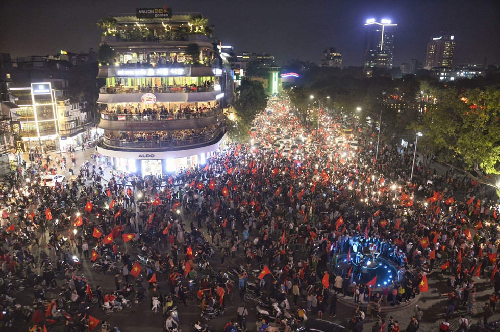
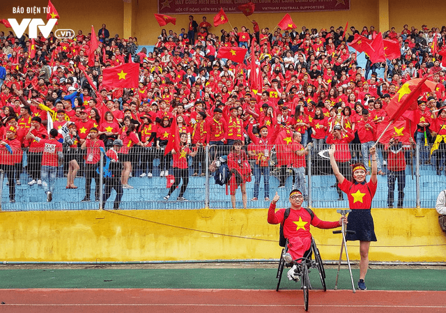
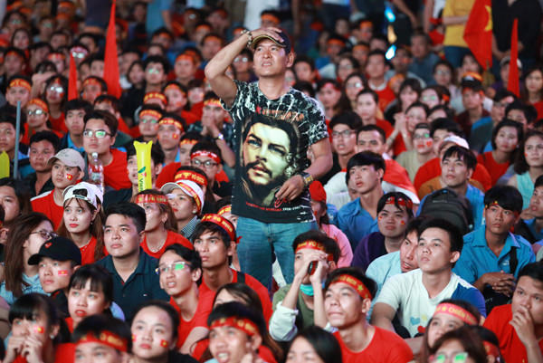

Article available in 日本語
今週はベトナム全国に対して特別な一週間でありました。初めてアジア州規模の大会に出るベトナムチーム。そして、決勝戦まで勝ち抜いたのは、チーム自体にとってだけじゃなくて、全国のベトナム人民にとっても全国パーティを催すほど光栄な機会です。
多分ご存知でしょう、ベトナムは不満を訴える人が少ない国ではないようです。特に、まだ十分に世を知らない人たちである若者は頻繁に訴えます。口頭でとか、ネット上で、SNSでとか等。自分の国に皮肉な名前（天堂、東ラオス、南支那…）をつけつつ、不満ばかりを訴えている若者たち。ですが、この一週間ではまるで、みんなは一つとなり、U23ベトナムチームに向かって全力で応援するようになったような気がします。旧正月よりも、みんなは共有の幸せで楽しんでいる様子となりました。まるで、日常生活での苦労、疲れ、悲しみ全てがよそに、幸せが一つだけ残ったという様子でありました。共通の雰囲気、共通の調和に溶け込んでいたような。
もしかしたらこの時は、１００年に１回だけ起きる奇跡なんだと人民は思います。準々決勝、準決勝でベトナムチームは予想外により強いチームに勝ち抜きました。その奇跡は、ベトナム人民の眠っているサッカーの愛を起こしました。サッカーに全く興味のない人たち、年齢を問わず、みんなは道路に舞い降り、知り合いのない人たちは仲間同士になるように、みんなわいわいしていました。
これは、サッカーを超えるものとなりました。もう愛国心になったと言われていました。
奇跡は、みんなを繋げていました。

そして昨日、ベトナム対ウズベキスタン決勝戦にあたり、応援する人たちは大変忙しい１日がありました。みんなはベトナムチームは優勝すると絶対に信じています。ミーディン国歌競技場で熱い応援の火が強く燃え上がっています。奇跡がもう一度起きることを期待しています。本当に、もし優勝したら、全国が爆発することに至るくらいです。

全国は優勝を待っています。ベトナムチームは一位になると思い込んでいます。
なのに、今回勝利女神はベトナムチームに向かわなかったのです。
１１９分目にウズベキスタンの選手によるゴールは引き分け状態を崩し、ベトナム全国の人民の期待を崩壊させてしまいました。
全国、だと言っても言い過ぎではないと思います。
残りの１分はやはり逆転を起こすことはきつすぎるでしょう。そのゴールでベトナムチームはウズベキスタンに優勝を譲らざるを得なくなりました。

数年前もし国家チームが負けたらすぐに批難、皮肉を受けるはずでした。
しかし、今回は誰も責めない。批判しない。批難もない。「お疲れ様」、「がんばったね」、「よくできたね」…など優しい言葉で慰め合いました。みんなは知っている、ここまでたどり着くために、ベトナムチームは２倍、３倍の自分の力を絞り尽くさなければならないことを。
なんと美しいでしょう。

生まれた時からこんなにみんなが結束する景色を見るなんて、やはりこの世はまだ知らないことがたくさんあると認識してしまいました。
ただボールが転がるだけじゃない。ただサッカーだけじゃない。すでにサッカー以上のものになった、サッカーを超えるもの、みたいな気がします。
みんながボールとともに嬉しくて、寂しくて、この一週間は確かに、ベトナム人にとっては一生味わうことができないことが味わえました。全国同一になったことはきっと、これからもみんなの印象に残り続けるでしょう。
外国人がそういう景色を見ると「ベトナム人サッカーこんなに好きなんだ〜？」と思ってしまいそうでしょうね。それはまあありですけれども、ベトナムチームが決勝戦に入った際はベトナム人民のプライド、民族意識を起こしたからですね。
いつになったらまたこういう風に全国一致になるような景色が観れるだろうかなとちょっとしただけ考えてしまいました。サッカーは本当に素晴らしいものです。今更ですが、僕がそういうことを認めます。その景色を体験した人たちはおそらく、同じ意見を思うでしょう。
記事著者：Kaito Yuuki